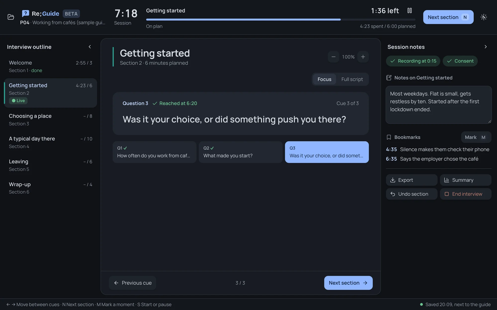
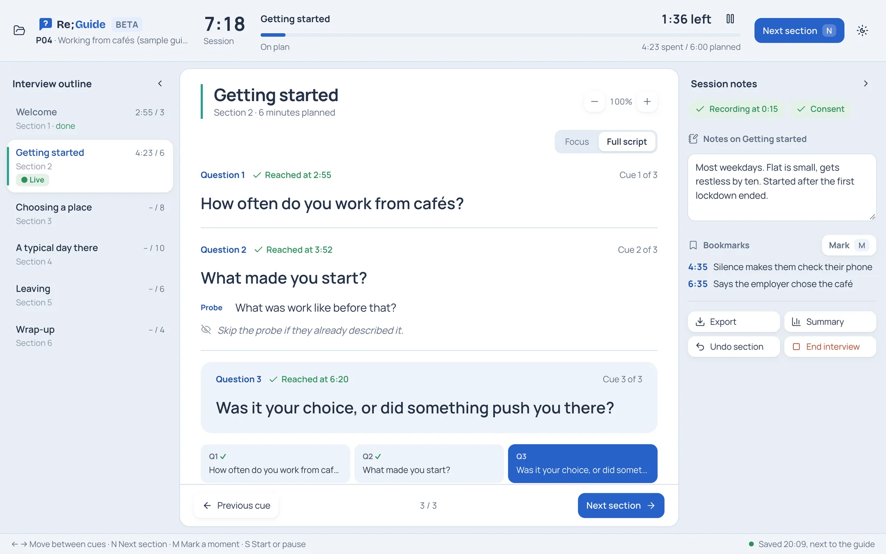
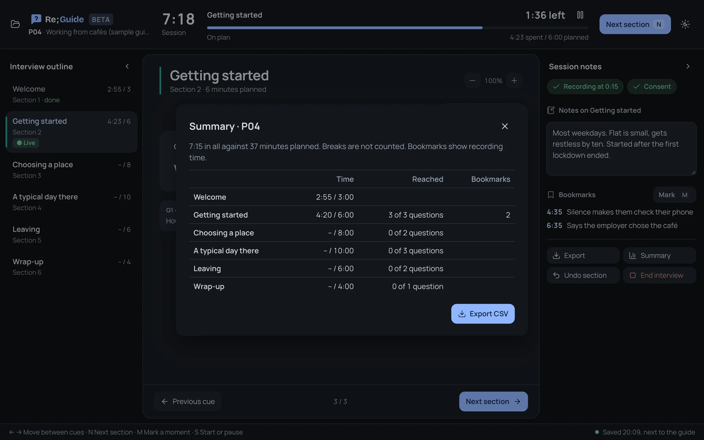

Re;Guide
Re;Guide
An open-source desktop app to run your interviews from. The clock, the current question, its probes and your notes are on one screen, so you can take notes without losing your place in the interview script.
In an interview I'm listening, watching the time, checking the interview script and writing notes at once. A Word file or a printout can't keep time or hold my notes.
- Designer and developer, my own project
- Beta, first release planned for 2027
- Mac and Windows
- Open source, MIT licence
- Code on GitHub
- Researchers running semi-structured interviews
- Interviewers working alone, with no note-taker
- Students running their first interviews
- A clock for the whole session and for each section
- One question at a time, with its probes
- Notes and bookmarks next to the script
- No account and no server
- The script is a text file on your computer
- Each interview is saved next to it


What inspired me
I ran my study's interviews from a web page I built: the clock on top, the outline on the left, the question in the middle and my notes on the right. Re;Guide keeps that layout and lets anyone load their own script.
1. The interview script is plain text
Most people already write their interview script, or protocol, in a Word file, and copying it into a form is a chore. In Re;Guide the script is a text file. Each line starts with Say, Ask, Probe or Note, and each section heading carries its planned minutes.
# Freelancer study ## Warm-up (5 min) Say: Thanks for joining. This takes about an hour. Ask: How did you start freelancing? Probe: What made you choose it?
2. Two ways to read the script
Focus shows one question and its probes, big enough to read at a glance. Full script shows the whole section when you want to see what's coming. You can also click a later section in the outline to look at it, and the clock stays on the one you're in.

3. Time tracking against your plan
A long interview drifts, and it's hard to tell by feel. The bar on top runs a clock for the whole session and one for the section you're in, and shows whether you're on plan. Each question's time is logged the first time you reach it, and breaks pause the clock so they don't count. At the end you see each section's time against its plan.

More features
- BookmarksPress M to mark a moment. Note when the recorder started, and bookmarks show recording time.
- Undo sectionMoved on by mistake? Undo gives the time back.
- Saves as you goIf the app closes mid-interview, it opens again paused where you were.
- AccessibilityChange the text size and switch Day or Night. It follows your computer's reduce-motion setting.
- Keyboard shortcutsUse the arrow keys and N to move on without reaching for the mouse.
- ExportSection times, questions reached and bookmarks as a CSV file.